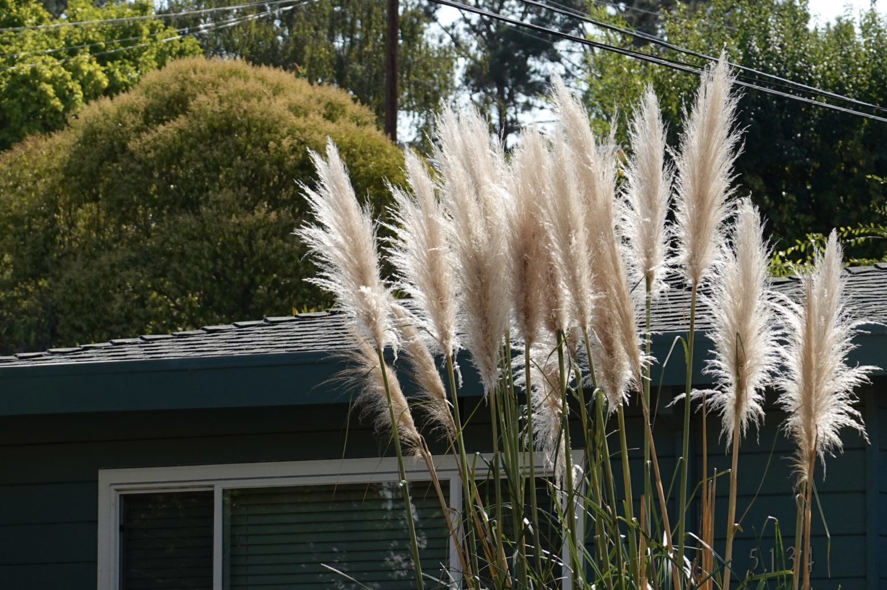
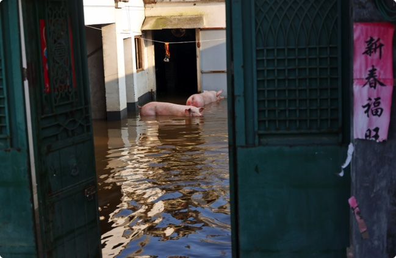

Richmond could become next California city to ban gas appliances.
Gas stoves and fireplaces may be a thing of the past in Richmond under a proposed ordinance that would shut natural gas out of new buildings.
I am a student at the UC Berkeley Graduate School of Journalism.
I used to work as an intern video journalist at Beijing Television Station
and as an intern video producer at Reuters News Agency.
You can find my resume on Linkedin or contact me by email
Gas stoves and fireplaces may be a thing of the past in Richmond under a proposed ordinance that would shut natural gas out of new buildings.
Dying trees, withering leaves, flammable plants. They fill in spaces around and between homes on East Richmond’s hills, an ember away from fueling disaster.
Chinese farmer Cheng wades through knee-deep water, pulling dead pigs behind him one-by-one by a rope tied around their ankles as he lines up the bloated carcasses for disposal.
